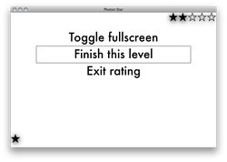

Back to main page
Navigating Photon Star
Photon Star is designed to be navigated with a remote control from a comfortable distance.
Thus, the mouse cursor is ignored.
Use your Mac's remote control or keyboard as follows:
| Remote |
Keyboard |
Action |
| + / ▴ | Up arrow | Move selection or photo upwards. |
| - / ▾ | Down arrow | Move selection or photo downwards. |
| « / ◂ | Left arrow | Go back. |
| » / ▸ | Down arrow | Go forward. |
| ► / ◯ | Spacebar | Choose selection. |
| MENU | Escape key | Access more options. |
NOTE: the "Remote" column shows the buttons on a plastic / aluminum Apple remote.
If you are using a non-Apple remote, check for button equivalents in the manual
of the software you are using to connect it to your Mac.

When the MENU key is pressed while rating a stage, the options that appear behave as follows:
-
Toggle fullscreen lets you switch between rating pictures full screen and in a window.
Switching to full screen helps you see photos at a larger size.
Switching to a window lets you use other applications before you finish rating.
Please note that ratings are only set in iPhoto when you confirm an entire stage,
and any rating changes you make manually in iPhoto will not appear until Photon Star's album list reloads.
-
Finish this level has two purposes.
In the first stage, all remaining photos (including the current photo) are left unrated.
This lets you rate only part of a large album in a single sitting.
In later stages, all the remaining photos are automatically bumped "down" to remain at the current rating level.
This can speed rating if you know you have already bumped "up" all the photos you intend to promote from a stage.
-
Exit rating is similar to finishing a level, but you will not proceed to the next stage.
Promoted photos will simply receive the next higher rating level.
This lets you make any final rating adjustments in iPhoto at a later time.